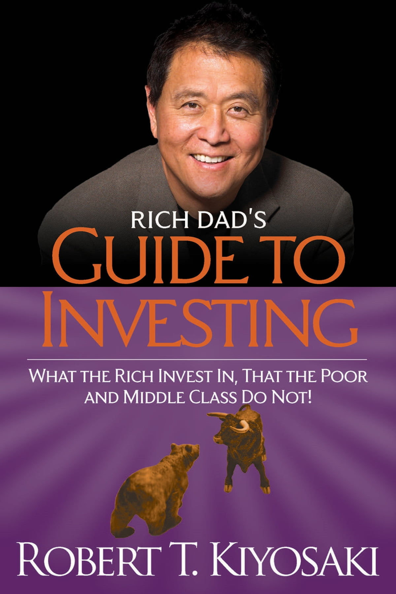

Rich dad's guide to investing
Book By Robert Kiyosaki
I read "Rich Dad Poor Dad" probably when I was thirteen years old, and I’ve read it multiple times since then. This particular book was so profound and filled with incredible insights for anyone excited about being of value and making a lot of money.
Anyway, here are some points in the book that I find to be very useful:
There are 3 core values in the world of money:
- Rich
- Comfortable
- Secure
So basically, Rich Dad says you ought to have plans written down for each of these levels and that (surprisingly, to me anyway) you need the last two first before the plan for being rich.
Key point: Get written plans for all these levels asap; you’ll need professional assistance in this task.
This next point isn’t a lesson but an interesting fact: An investor can make money from tax liens (A tax lien is a legal claim by the government against the assets of an individual or business that has failed to pay taxes owed. This claim ensures that the tax authority gets first claim over any other creditors vying for the debtor’s assets. If the tax debt is not paid, the government may proceed to seize the assets for sale).
From Copilot
Here's Copilot (ChatGPT-4) explanation:
Yes, investors can potentially obtain high interest from tax liens. When a property owner fails to pay their property taxes, the government can place a tax lien on the property. Investors can then purchase these tax liens, paying the owed taxes, and in return, they have the right to collect the tax debt plus interest from the property owner. The interest rates on tax liens are often higher than those of traditional savings accounts or bonds, which can make them an attractive investment option. However, it’s important to note that tax lien investing involves certain risks and requires due diligence and an understanding of the process. If you’re considering tax lien investing, it’s advisable to research thoroughly or consult with a professional to understand both the potential rewards and the risks involved.
Because people groaned about learning accounting, finance and investing Kiyosaki made the Cashflow game, now get this there are 2 versions of the game 101 and 202, the latter being more advanced. I always thought there was one. After checking the website, only Amazon offers 202, I couldn’t find 202 on the Rich Dad website: https://www.richdad.com/classic.
There’s a new one in beta, Cashflow-Plus didn’t work for me but you should test that out and tell me how that goes.
There’s this line that “Most developed countries have laws that protect the average people from bad investments”, like the Securities Act of 1933 here is a list of some more laws in the United States (from Copilot):
- Securities Exchange Act of 1934
- Dodd-Frank Wall Street Reform and Consumer Protection Act of 2010
- Investment Company Act of 1940
- Investment Advisers Act of 1940
- Sarbanes-Oxley Act of 2002
Here is a list of some laws in Nigeria (also from Copilot):
- Nigeria Investment Promotion Commission Act (NIPC Act)
- Investment and Securities Act (ISA)
- Foreign Exchange (Monitoring and Miscellaneous Provisions) (FEMMA) Act
Conclusion: This book highlights the need to live and breathe financial education and corresponding action, this might not be the only way (just taking action and hitting your head against the wall may work üòÜ) but it is sure way to get out of the rat race..learn and just do it.
Random fact: “The country with the highest home ownership rate is Romania at 95.3% while the lowest is Nigeria at 25%”